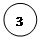
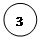

IN DEFENCE OF METAPHORS
-
Swagato Saha, Tunir Ghosh
On
Semantics & Language – “Language is the house of Being.” There is no
great mystery about Heidegger’s intentions in his general hermeneutic project;
elsewhere, he warns us of modern Science’s shortcomings insofar as it “cannot
think”, (that is, bring into question its own conditions of possibility) and
the nihilistic foreclosure of Western metaphysics as decreed by the unholy
spectre of Cartesian Subjectivity. Outrageous as these claims are, I am willing
to concede here some ground to Heidegger – if, by thought/thinking, we are to
accept (somewhat unconvincingly albeit) an authentic semantic dimension and
that alone, it is reasonable to suggest, as many others have already that
Science doesn’t exactly acknowledge its (the semantic dimension’s) existence.
Further, proponents of scientific realism might also claim that it’s precisely
in dispelling concerns about authentic semantics, is it possible to arrive at
the kind of certainty which characterises the scientific episteme.
What arises as a result of our semantically motivated inquiry into the natural
order of things (‘Why this (effect/phenomenon) and none other?’), following the
abandoning of such ill-fated semantics, is the distillation, elucidation of
underlying rules/mechanisms responsible for the way things appear. Secondary reflection
upon these elucidated relations simply doesn’t belong to the domain of
scientific inquiry. As such, what Heidegger proposes is that in ‘secondary’
reflections precisely, where the hitherto passive medium of language is brought
into rigorous question, is it possible to engage in semantics proper.
Consider (perhaps exclusively a feature of modern Science) scientific
discourse’s opposition to, and at times, downright dismissal of metaphors. Something
Walter Benjamin may have related to ‘scientific disenchantment’. The unresolved
complexity of superposition of quantum states can at no cost be translated to
“things being in two places at once”. Or, a metaphor that I’m familiar with
since schooldays; which likens the coalition/condensation of atmospheric water
vapour resulting in cloud formation and rain, to a sponge that, when submerged
in water, absorbs the same and grows heavier; simply fails to account for the
vastly distinct molecular and supramolecular interplay in the respective
instances that in fact render the processes irreconcilably different. Look
for details and thy metaphors fall.
(Heidegger was certainly correct in identifying these tendencies, as he sought
recluse in poetry and its sensitivity to language proper in his later years.)
There is somewhat of an echo of traditional rationalism to be found in this
opposition to naïve metaphors. Much in the way that reason entails a suspension
of our pre-reflective immersion in common-sense, so it is in severing all
attachments to common-sensical immersion in language, which allows for free
improvisation of non-substantial metaphors, do we secure discursive truth. (So
says Althusser, among others.)
What then of Semantics?
Lacan poses a subtle correction to Heidegger’s formula – “Language is the
torture-house of Being.” For Lacan, every language act is marred by the
subject’s anxious foray into symbolic representations which ultimately fail to
articulate the Real (Lacanian Triad). Where he departs from traditional
metaphysics is in denying any substantial basis to this Real – unlike for
instance Plato; Platonic Forms are nonetheless substantial and constitute a
higher, immutable order of existence; or Kant, where the noumenal order
(thing-in-itself) remains arguably substantial (arguable since Kant doesn’t
engage in explicit substance metaphysics). Hereby one could claim that the
whole (Heideggerian) hermeneutic project secretly believes in such a stable, substantial
order of Being, and in language as the horizon of meaning; and that its
proposed secondary reflections on the symbolic order of language must typically,
unsurprisingly fail to signify the Real. We may say, for Lacan, the
metaphorical (or more generally, metonymic) progression of language merely
postpones, indefinitely, the subject’s encounter with the Real. Furthermore,
what’s interesting is that Lacan sees in Science a unique systematisation that
produces knowledge of this Real. In other words, where language cheats and
resorts to impotent ambiguity, scientific discourse is simply true; and no
amount of transcendental reflection can render scientific truths uncertain. Are
we then to abandon our semantic endeavours?
I shall hereby discuss, briefly, two complementary formulations of the so-called
semantic dimension. The first of these interprets Semantics as the space
between different Syntactic Transforms (“Reified & Realised” –
Cogito 1st Issue); this appears to agree with the above
discussed transcendental formula involving secondary reflections – against the
rigidity and the literality of Syntactic Fields (such as Science for Lacan),
the essential subjective (semantic) gesture is in the free
translation/metaphorical exchange of categories cross different fields. As
such, no overarching harmony prevails, at least not primarily, across Syntactic
Fields which constitute the primary line of theory – as in, directly engaged in
observing and making sense of phenomena. It is only at a meta-theoretical
level, where one (leisurely/secondarily) reflects on existing theories, can we anticipate
semantic closure, perhaps when unconvincingly attempting to understand how
different theories correlate. One is tempted, (along deconstructionist lines),
to claim that there is novelty in intertextuality. The ultimate staging
of this meta-theoretical act (and its fundamental impotence) is in the domain
of Natural Philosophy in the aftermath of modern Science – the former cannot
help but appear, measured against the latter, as a benign, insincere, flimsy
attempt, a false rationalisation to make sense of the radical
epistemological break enforced by the latter.
It is possibly a bit vague, if not incorrect, to suggest that (different) Syntactic
Fields simply denote distinct theories; a slight improvement suggests distinct
epistemes, instead. And since episteme(s), distinct as it is, must also be
opaque and unaware of anything but itself, there is the possibility of
semantics proper in attempting to bridge this impossibility, to put to words
that which bears none. (Incidentally, for large parts, that is what we’ve been
doing here in Cogito, in the few issues that are out. I shall critically
reflect on this point later.)
The second formulation borrows from and builds on some ideas introduced in “Erasure
of Categories” (Cogito 2nd Issue). Let us imagine the Semantic
Space and its corresponding metric as representing the proximity of different
categories belonging to its episteme – in other words, the Semantic Space
provides some measure of how similar/different 2 (or more) categories are. The
same way as we know that the number “2” is closer to “3” than to “30”, so we
might expect “Prescriptive” to be closer (more alike) to “Rule” than to “Law”. As
such, any attempt at improper dissolution of categorical differences is
suggestive of improper semantics. One might consider here the case of “false
universals”/Coincidence of Opposites. Clearly, this also applies to
political contexts, as exposing suspicious political narratives which attempt
to address its people as a harmonious, organic, cohesive whole whilst
dissolving crucial effective differences among them; such as the alt-right retort
– “All Lives Matter” to the BLM movement (2020) in USA.
It is my purpose to compare these twin readings on ‘What is Semantics?’ to
contemporary Bayesian Associationism, and to initiate thereby meaningful
dialogue.
Associationism & Impossibility of Semantics – In Denis
Villeneuve’s Blade Runner 2049, there’s a scene where the protagonist, having
completed his mission, must routinely appear for a ‘baseline test’ before he
can be admitted to his headquarters. Here he is bombarded with typically
sentimental questions – ‘What is it like to hold hands with the person you
love?’ etc. – to which he must reply dispassionately, uttering ‘keywords’
(‘Connected.’) and no more, or else be detained. The rhetorical point of
course being – here is a society which does not in the least value the
essential domain of human passions. (People are no longer named, naming being a
humane artifact.) Against the prospect of spontaneous declaration of love, we
merely get this robotic repetition of keywords, much like the way text
predictors seem to anticipate speech. One can clearly detect the antagonism
that cuts through the whole Bayesian paradigm and its take on matters of
subjectivity/knowledge representation. It must nonetheless be kept in mind that
‘Subjectivity’ isn’t a case of direct engagement for Bayesian Associationism.
It only sets out to fulfil some utilitarian aspects of representation and use,
and the question of Subjectivity is more of a secondary reflection really.
However, it is against our better judgement to return to traditional
‘Intentionality’ here, in blind opposition; because, as Science remains literal
and true, so does Associationism. The sheer efficacy of associationist
representations far outweighs heavy-handed, at-times-obscure ventures into
intentionality. And it’s precisely this pure utilitarian fulfilment that
renders representations realistic, against their dissolution by the logic of
subjective intentionality. In other words, we may complain however we wish
against this ‘hegemony of keywords’, yet it remains true; and against its
uncompromising order, our inner wealth of persona to which we spontaneously
relate, our intentions; they appear mystic and insincere. (And I say the
same to a friend of mine, who is in this sense wary of YouTube
recommendations.)
Regard the characterisation in detective stories. Typically, we have a
well-rounded, multi-faceted, polymorphous criminal mastermind, against a
relatively de-intellectualised, but nonetheless equally industrious detective.
I have in mind Moriarty and Sherlock Holmes, respectively. Moriarty is
well-read and well-published on a host of subjects ranging from Dynamics of
Asteroids to Binomials, comes from a well-to-do family, boasting a towering
intellect. And elsewhere too, where Moriarty doesn’t cast his ominous shadow on
the crime scene, the detective is required to navigate his way through the
particular metaphorical whimsies of his case (Musgrave Ritual, for instance),
searching for openings for literal intervention. And more contemporary
adaptations seem to conform to, or further pronounce this dialectic, if
anything. It is as if every metaphorical obfuscation produces a blind spot, a
vulnerability at its literal counterpoint, the exposition of which renders
explicit the metaphor’s failed attempt at harmonisation/proliferation. ‘It’s
elementary.’
Or, to take up the highly problematic category of Belief – what
distinguishes the prevalent secularised rehabilitation of religious texts is
its insistence on metaphorical exegeses. Take Miyazaki’s ‘My Neighbour Totoro’
– here we find none of this metaphorical distanciation and Belief operates from
a far more direct, literal position; it is this direct assumption of myths
(dustbunnies) which characterises Belief for the pre-modern subject, and Totoro
has to appear as a deus-ex-machina to assume and absolve consequent structural
inconsistencies.
Along these lines, one has to be critical towards the implication of
intertextuality as an end-in-itself. It is far too often the case that in doing
so one basically obscures the actual end, that is, the literal counterpoint. It
is only in suspending such (actual) ends, can we (wrongly) legitimately regard
its epistemological anarchism as novel and insightful. To this end, it is
required we be critical towards intertextuality (as an end-in-itself), and
uphold a certain ‘economy of metaphors’, precisely to secure authentic metaphorical
insight.
All metaphors are equal; but some metaphors are more equal than others.
(As an instance of legitimate and true use of metaphor in Science, I nominate
Descartes’s theory of vision. As a blind man makes use of a walking stick to
tap into surroundings, he imagines vision to be the occasion of sense of
similar ‘protruding rods’ on our sensory organs. One need only read ‘protruding
rods’ as photons and we arrive at scientific literacy.)
To return to the Bayesian scene, it is subjective intentionality which
obfuscates, and narrativizes through false rationalisation, what are basically
arbitrary associations. What is required here is a critical distance towards
sorely intentional defences of subjectivity. It is this directness of
Associationism, its naked factuality which we least anticipate in our escape to
fraudulent self-narrativization.
One can contrast here, in Psychoanalysis, the distinct and majorly opposed
methods of Jung and Freud in interpreting dreams. Whilst Jung tends to mobilise
some essential (intentional) subjective content which isn’t reducible to pure
form (of the dream), Freud remains a principled formalist. (It is unsurprising
that Freud too is dismissive of self-narratives – stories about ourselves that
we tell ourselves.)
Freud - The Interpretation of Dreams, on "The Dream-Work":
“Formerly I found it extraordinarily difficult to accustom my
readers to the distinction between the manifest dream-content and the latent
dream-thoughts. Over and over again arguments and objections were adduced from
the un-interpreted dream as it was retained in the memory, and the necessity of
interpreting the dream was ignored. But now, when the analysts have at least
become reconciled to substituting for the manifest dream its meaning as found
by interpretation, many of them are guilty of another mistake, to which they
adhere just as stubbornly. They look for the essence of the dream in this
latent content, and thereby overlook the distinction between latent
dream-thoughts and the dream-work. The dream is fundamentally nothing more than
a special form of our thinking, which is made possible by the conditions of the
sleeping state. It is the dream-work which produces this form, and it alone is
the essence of dreaming- the only explanation of its singularity…”
Bearing all this in mind, a
semiotic refurnishing of Bayesian Associationism seems like a viable
alternative. Thus, while for Bayesian Associationism, the question remains – ‘Given
(conditions), what will it (the subject) do?’...we additionally ask – ‘Given
(conditions), why does the subject do what it does?’; in hope this renders apparent
the semantic dimension. In this, we remain true to the form, and open up
instead the so-called transcendental opacity of the subject to semiotic
formalisation, in consideration of C.S. Peirce’s Semiotics, to which some
additions are introduced. Our ends are of course thoroughly utilitarian; the
consequent representation has to be usable and responsive. Since associations
herein can no longer be considered arbitrary or ‘without logic’, and as there
ought to be varying kinds of association, we effect a semiotic categorisation
of the same. If not in spontaneous experience, then so on further reflection,
it seems that the ‘association’ of a ‘white dove’ to ‘peace’ cannot be down to
similar cognitive-semantic mechanisms, as that of ‘smoke’ to ‘fire’, or a
‘person’ to his ‘Name’, or ‘the contents of a page’ to its ‘page number’, or
the prospect of intimacy to a keyword. In other words, there are different
modes of signification.
Enter Semiotics.
Semiotic Associationism – The semiotic categories we hereby define bear
definite resemblance to those of Peirce; however, they vary in non-trivial
ways. In keeping with the general context of our semiotic intervention, as
developed in prior sections, we propose the following classification of signifier/signified
– 1) Causal, 2) Symbol, 3) Icon. Besides, some additions will be considered
later on.
The initial structuralist conception of Ferdinand de Saussure insisted on an
arbitrary (and differential) relation between the ‘signifier’ (loosely, representation)
and the ‘signified’ (loosely, referent). While it is possible to reject
Peirce’s categories as nonetheless harbouring a repressed sense of this
arbitrariness, it seems reasonable to accept the basic coordinates he provides,
as a speculative effort to better define the signifier-signified interaction
(already, for Peirce, it is replaced by the triad of sign-interpretant-object).
Now, it is to be understood that this model reflects the basic ‘cognitive
space’ of the subject; as such, it is not ‘always-already’ there, but must be
studied in formation, as it changes from one state to another, in terms of the
underlying mechanisms that govern such a change. This also implies, that when
the subject is required to engage parts of its cognitive space, the same
mechanisms allow for traversal and (hopefully) manifestation of ‘correct’
decisions/response.
Along these lines, let us look into the aforementioned semiotic categories.
1) Causal – Consider two subgraphs, S1 & S2, adequately representing their
respective categorical spaces for a particular context. A causal interface
between the two requires there be complete logical equivalence between S1 &
S2 – that is, the number of nodes and their connections (edges) must be the
same. Further, it must be so allowed that there exists an edge between nodes in
S1, and counterpoints in S2. Under these conditions it can be said that a
Causal interaction exists between S1 & S2, and the corresponding union S3
is causally mediated. In absence of the aforementioned direct edge, S1 & S2
are logically equivalent, however their (syntactic) equality isn’t ensured.
With the inclusion of such a direct edge, and the fulfilment of conditions of
Causal interaction, it might be said that causal mediation is syntactic. As
such, it isn’t just the case that categorical relations in S1 are ‘like’
categorical relations in S2, but rather the stronger (literal) assertion, that
categorical relations in S1 are the categorical relations in S2, and
that one is reducible to (and implies) the other.
2) Symbolic – Imagine S1 & S2 as before, except without the direct S1-S2
edge. What we have here is a logical equivalence between the two, yet no
literal assertion (X (in S1) is A (in S2)) can be made – all we can say is – X
(in S1) is like A (in S2). In the representation (given below), we see that
Symbolic mediation is characterised by the presence of a “vanishing” node; all
edges point towards it, nothing points out. One might consider Freud’s early
descriptions of psychic drives where he seems to tap into the vocabulary of
hydraulics to describe psychic phenomena. No literal assertion along lines of
“Drive is Pressure” (or something to the effect) can be made. However, if we
are to assume a virtual category (the “vanishing” node) which grounds/mediates
S1 & S2, we come to observe their logical equivalence. An acceptable
analogy (which shouldn’t be pushed any further than prescribed) suggests a
resemblance to Congruency/Similarity.
Congruency, much like Causal mediation, implies ‘literal’ coincidence;
Similarity introduces a scaling factor – that is – the two shapes coincide if
appropriately scaled; as such, the “vanishing” node embodies this scaling
factor.
3) Iconic – If instead, from Causal mediation, we are to abstract logical
equivalence, we are left with loose designators. That is, while S1 bears a set
of edges describing its logic (how different categories relate), S2 is simply a
set of alternate names for the categories in S1. The representation (given
below) makes it clearer. Consider a segment from the line of Natural Numbers.
Of course, and we take this to be S1, there is a certain logic described herein
which relates 1 to 2, 2 to 3, 1 to 3 and so on. However, it doesn’t really
matter and ultimately stands to convention, as to why the notion of 1 comes to
be signified as ‘1’. And this set of arbitrary designators, stripped of logic,
is S2. It’s about as meaningful (rather, meaningless) as names go. As such,
this is an instance of Iconic mediation.
Therefore, it follows from these definitions, that Causal Mediation is a
combination and implies the simultaneity of logical equivalence as Symbolic
Mediation and literal designation as Iconic Mediation.
4…Name? – (The time of writing of this section unfortunately coincides
with the passing of Kripke, whose insights are crucial for us. So, in memory of
his genius, we proceed hence.) Bertrand Russell’s interpretation of ‘Name’ was
strictly denotative; what, in terms of the semiotic categories we have
discussed, lies in Causal territory. (Russell – On Denoting)
Or, one might even consider Naming as a peripheral, subsequent designation of
preceding logic/relations – denotative still. In this case though, it’s better understood
as Iconic.
However, with respect to theoretical developments in Kripke’s Naming &
Necessity, we are forced to reconsider these interpretations, and perhaps
introduce a separate semiotic category of ‘Name’ as Containment. Herein,
a Name is kind of an ‘irrational’ stand-in that is self-grounding – in other
words, it retroactively rationalises itself. It is infinitely capable of
‘appropriating’, bringing under its purview all sorts of inconsistencies –
Kripke gives the example of Aristotle; stripped of all qualities that we’ve
come to associate with the person, it nonetheless ‘makes sense’ to refer to
this entity as ‘Aristotle’. To refer to politics, once again – consider how,
despite economic conditions of the average Indian being subpar, we are required
to (falsely) identify with certain pride, with the odd Indian billionaire,
who’s probably made the better share of his fortune abroad. ‘India’, as a
Name/Container, precisely dissolves all contradictions and differences within
its space, such that every person rich or poor, accepts the coordinates as
prescribed by this Container. In essence, it involves some sort of
‘bootstrapping’ or ‘a short circuit’ across Name as Peripheral Designator/Icon
to Name as Container; the latter determining its own (rational) conditions of
possibility.
(It is tempting to relate this to Hegel’s notion of the Universal’s
self-deployment as its own Particular, which he exemplifies with respect to the
name Caesar, occurring first as person, then as title. Even Lacan’s notion of
the Big Other qualifies.)
Or to take up instead the case of ‘Emergentism’ – it seems P.W. Anderson’s formula
(‘More Is Different’/1972) still insists on a certain ‘renormalisation’ of the
phenomenon of Emergence; since ‘difference’ can only arise as a consequence of
‘more-ness’/‘less-ness’ of something, one can still conclude that even if parts
do not add up to the whole (Whole is More), and even if the composite Whole is Different
(in the sense it shows new properties), this change is nevertheless described
by Parts. That is, I maintain control over one side of the equation, the side
that bears the parts, and I am always allowed to assemble more of these. As
such, whatever unforeseen catastrophe by the name of emergence manifests on the
other side of the equation, it still bears the same ‘Name’. (Here, it is
required to insist on a different formula for Emergence as “The One Is
Different”. That is for another time.)
(It might be possible to introduce Saussure’s differential logic (a thing is
every other thing that it’s not), within a Container. We have this under
consideration currently.)
A Name is a cross we must eternally bear.
Finite Embodiment of Infinite Difference – Having already introduced
this category in a previous issue (“Reified & Realised”), I hereby
nominate it as defining the precise status of ‘Understanding’, and Semantics
thereof. I move with some measure of scepticism, since it remains at the moment
undecided, if the semiotic categories previously designed can, in some
combination, describe Understanding. Further, there are significant differences
about the nature of language (inclusive of semantics) in the theories of
Kripke, Wittgenstein, and Chomsky, which require rather cumbersome exposition
beyond the scope of this piece.
Nonetheless, Finite Embodiment of Infinite Difference (FEID) describes the
shift in the nature of Subjectivity from Cartesian Substance Dualism to
contemporary Cognitive Science, especially Chomskyan theory of language.
On the one hand, since Turing computability allows for the existence and
operations on (what Chomsky calls) Discrete Infinities (or digital infinities),
the initial mystery of ‘infinite use of finite means’ has been adequately
resolved. We may say, this means Subjectivity can no longer be conceptualised
as belonging to a separate ontic domain (Res Cogitans), irreducible to the rest
of physical existence (Res Extensa). Further, algorithmic exposition (in and as
digital infinity) renders the traditional intentionalist defence of
subjectivity untenable. However, this calls for a different, somewhat opposed
question. If Subjective Intentionality/Opacity is impossible, then does this
imply a recourse to Behaviourist transparency and perhaps performative
approaches to Subjectivity?
Moreover, since Chomsky refuses to attach to generative procedures the domain
of Semantics, isn’t it a viable claim that our ability to engage in
(semantically) coherent discourse, since it isn’t a manifestation of (innate) pathological
syntax, is an exercise in competence without comprehension? In other words,
there is only Syntax – and Semantics is false rationalisation, absent meaning
we retroactively impose, which can only arise out of our direct, pre-reflective
immersion in language performance. One might even liken it to Wittgenstein’s
idea of use/manipulation of paradoxes in logical systems to expressive ends. (They
both stand for conceptual destitution of metaphors, that I have earlier
discussed.)
As such, the essence of Subjectivity is dissolved to performative acts, and
so-called creative use of language is arbitrary and de-essentialised. Stripped
of its ‘Heideggerian’ sensibility, language thus becomes an impoverished, objectivised
medium of thought, itself incapable of participation.
However, in the face of FEID, both these readings (traditional Intentionality
and performativity) must be rejected.
(It must be noted that the three positions we encounter here on the question of
semantics – intentionality, performativity, FEID – basically reflect the triad
of Kant, Spinoza, Hegel; which Zizek pursues as central to Western Philosophy.)
The basic paradox is the following – it is true in a certain obvious sense,
that the ability to newly articulate an idea is constitutive of Understanding;
however, should we not be suspicious of ideas whose articulations can be
infinitely varied? Does this not hint at potential, problematic Ptolemisation? Anything
goes…?
This requires yet another cumbersome engagement and shall have to wait its
turn. Briefly, the ‘Finite’ in FEID stands precisely to prevent this collapse
to a situation where ‘anything goes’. And within it is contained the scope of
infinite articulation. (The same way a finite-dimensional vector space contains
infinity on each of its basis – a crude analogy, I admit.)
It is this invisible possibility of infinite variation that is constitutive of
Reification (in the exact sense I’d developed in Reified & Realised).
One should here invert Dennett’s formula – Understanding is rather an instance
of comprehension without competence. It is certainly not possible for a
subject to perform every variation on a concept, but the subject understands!
Now, since new articulation is already predicated upon, or occurs within the
coordinates prescribed by the ‘Finite Embodiment’, there is a minimum of form
present in this newness; that is, it doesn’t follow the logic of ‘ad-hoc
updates’, wherein we are required to recalibrate, readjust our notion of the
concept at each step, with every new unhinged articulation. (It seems to me
that statistical learning algorithms (or ‘infinite monkeys’) operate much this
way. What crucially disappears here is the immanence of change, change being
ad-hoc.)
Or to put it differently, the fact that we recognise new articulation as new,
and not something altogether meaningless that isn’t contained in and bears no
relevance to the concept, requires that it carry a minimum of form. In this
sense, FEID implies the immanence of newness, and remains faithfully formalist.
(As Hegel may have put it, it’s the failure of the One to coincide with
itself; ‘the One is Different’.)
And it is only thus possible to secure the domain of metaphors as a
discourse of Truth. I reserve my (more elaborate) defence of metaphors for
a later issue.
To Algebra or To Thermodynamics? – This concluding section serves
more as a paradigmatic reflection. There have been recent, kind of niche
attempts to formulate an algebra of semiotics (by Joseph Goguen), similarly
motivated so as to move beyond impoverished Bayesian semantics. Whilst it is of
course true that no amount of formalisation can be achieved without a minimum of
algebraic consideration, it is equally necessary to understand semantic
mechanisms as occurring, and as having developed spontaneously. As such, they
bear a logic of their own, and algebraic translations thereof hope to capture
semblances of this ‘natural logic’. With regards to this algebra, rather than
constructivists, we share far more in common with (realist) physicists, who in
their use of mathematical forms hope to reproduce ‘natural logic’. Furthermore,
as previously mentioned, since it is required, we be minimally able to account
for the formation of these semantic mechanisms, it doesn’t do to merely
represent the fully constituted state, and cast it in an algebraic lens. The
transcendental-ontogenetic question takes centre stage – how are semantic
mechanisms possible, how do they come to be the way they are?
The dichotomy thus proposed might appear unconvincing. In that case, look no
further than Wigner’s contemplations on the Unreasonable Effectiveness of
Mathematics in Physics, where he essentially raises epistemological
concerns in scientific inquiry. (One hopes it might have convinced Heidegger
of the potency of scientific discourse, and that, on these occasions if nowhere
else, Science does in fact think.)
Or, to borrow a leaf out of Chomsky’s Minimalist Program, rather than relying
on exquisite and intricate algebra, we are to start with a very small set of
elementary rules; and build more elaborate schematisms thereafter. It is clear
we are already in thermodynamic territory.
The interactions and consequent rearrangements of subgraphs in the ‘cognitive
space’, the kind of mediations that arise, are governed by elementary rules.
These rules reflect some sort of ‘natural economy’ (in essence, thermodynamics)
embedded in this space, which eventually result in the wholly constituted
states that we find, under the circumstances of finding.
It is largely out of allegiance to Natural Philosophy that I situate myself in
the Thermodynamics camp here, maintaining still my previous critique (Erasure
of Categories) that it comes dangerously close to false universality. My
intentions aren’t to downplay algebraic semiotics, but to include within its
scope its very material conditions of possibility, in an effort to think of, as
others have before, a materialist logic. To this end, I draw from Turing’s
ventures to Natural Philosophy in his final years, in an attempt to mediate the
levels of computation and natural phenomena – what might now be described as
some kind of ‘Pancomputationalism’. However, it shouldn’t be related all too
easily to Panpsychism, which includes in its ontology proto-subjective matter.
The finer intricacies of this difference shall be analysed elsewhere.
(Given below are the graphical forms of the semiotic categories previously
discussed – Symbolic [top left], Syntactic [top right], Iconic [bottom].)

 
